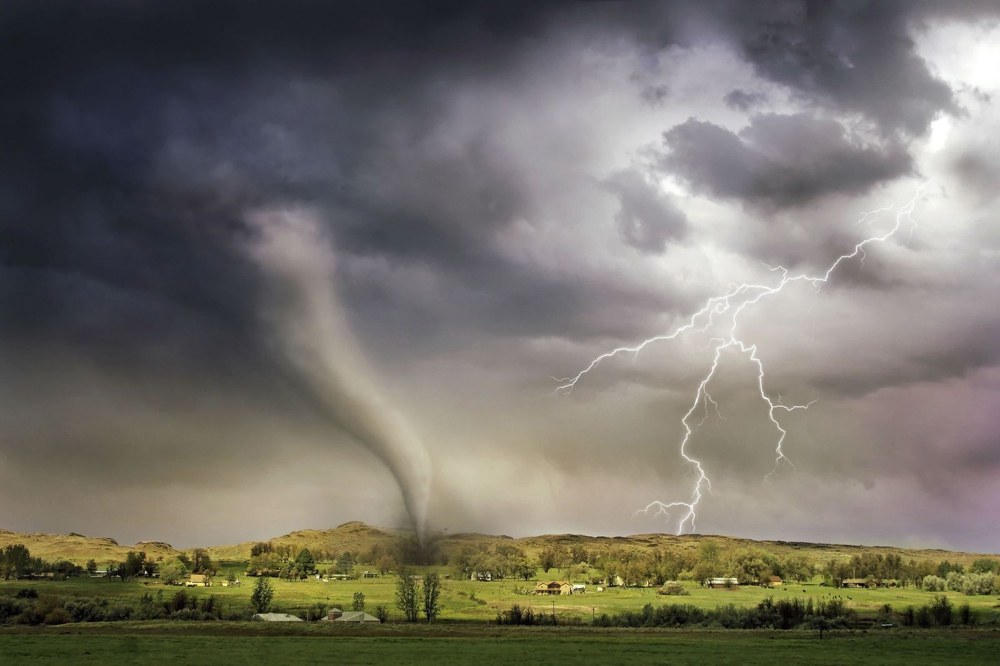

LOG 00 · Severe-weather consultancy — Norman, Oklahoma
Read the sky before it reads you.
Dr Rachel Donovan is a severe-storm meteorologist who works for the people standing underneath the weather: festival safety officers, insurers walking a damage track, growers deciding whether to harvest ahead of a hail core. Forecast cover, damage surveys and spotter training — every call written down, every fee in print.

LOG 01 · The reflectivity reader
A radar picture is an argument. Learn to read one.
Reflectivity — measured in dBZ — is how hard the radar's pulse bounces back. Rain bounces a little; hail bounces a lot. Pick a cell below and the reader interprets it against the same scale printed under the scope. This is the first five minutes of every briefing this practice gives.
Drawn scope — training picture, not live data · Rings 25 / 50 / 75 mi · Cell position illustrative
LOG 02 · The wind scale
A tornado's rating is a damage finding, not a wind measurement.
Nobody puts an anemometer in a tornado. The Enhanced Fujita scale works backwards: surveyors grade the damage, and the rating carries an estimated gust range. Pick a rating and read what it actually claims — this is the table argued over in Case 02.
LOG 03 · Engagements
What the practice takes on
Four kinds of work, booked in the open. The register is the whole offer — if it isn't listed here, it isn't sold here. Storm chasing for entertainment is not on it and never has been.
“Rachel's 06:00 briefing moved our headliner forty minutes earlier and put the evacuation triggers in writing before gates opened. When the cell turned, nobody was improvising. We paused for thirty-five minutes, the storm passed north of us, and we finished the night.”
Dana Whitaker — Safety Officer, Harvest Moon Festival · from Case 01, the casework page
LOG 04 · Fees
The price shape, in print
Severe-weather work is booked against a calendar nobody controls, so the shape matters more than a single number: a starting rate, what is included, and the four things that move the price.
Event forecast cover
Single venue. Written briefings at 72, 24 and 2 hours, a named forecaster on call while gates are open, and a post-event log your insurer can read. Multi-day festivals are quoted per programme.
Storm damage survey
Most tracks take one to three days. The signed report — map, graded damage points, rating reasoning — is included in the day rate, not billed as an extra.
Spotter & safety training
Public courses run in Norman through the winter. An on-site team day covers up to twenty of your staff and ends with your venue's own trigger table, written.
Agriculture season retainer
Two-month minimum. Weekly written briefing, frost warnings in time to act on them, and storm-day alerts by phone — not email — when a core is inside your county.
Weather is already on your event plan.
Put a forecaster on it too — the enquiry takes four fields.